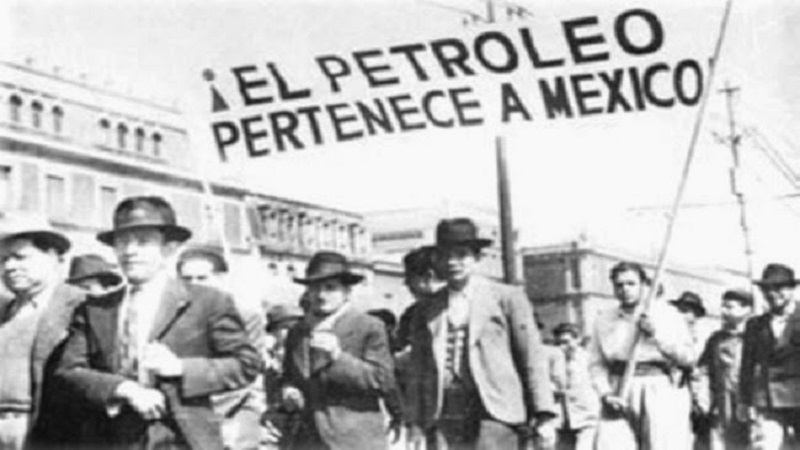

Lázaro Cárdenas del Río gobernó México entre 1934 y 1940. Fue uno de los presidentes más influyentes del siglo XX en el país.
Se distinguió por impulsar la justicia social, la reforma agraria y la defensa de la soberanía económica nacional.
Presidente reformista y símbolo de soberanía nacional
Lázaro Cárdenas del Río gobernó México entre 1934 y 1940. Fue uno de los presidentes más influyentes del siglo XX en el país.
Se distinguió por impulsar la justicia social, la reforma agraria y la defensa de la soberanía económica nacional.
Nace en Michoacán.
Asume la presidencia de México.
Decreta la Expropiación Petrolera.
